Adopta con Patas
Conoce a tu fiel compañero
y dale la vida que siempre ha merecido
Conoce a nuestros perros
Échales un vistazo y enamórate de todos ellos
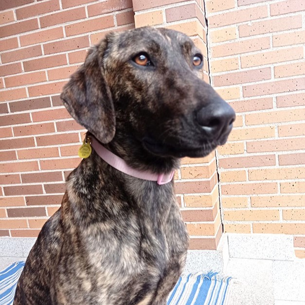
Sombra
Sexo: hembra
Edad: 2 años
Tamaño: grande
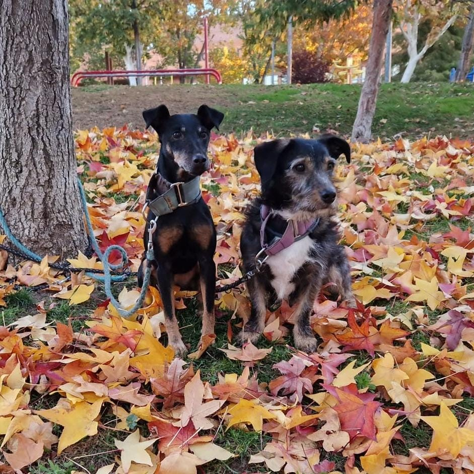
Grom y Cindy
Sexo: macho / hembra
Edad: 1 año / 5 años
Tamaño: pequeño / pequeño
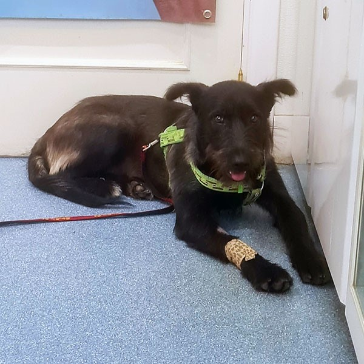
Griseta
Sexo: hembra
Edad: 1 año
Tamaño: grande
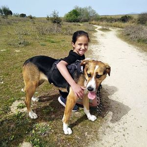
Batueca
Sexo: hembra
Edad: 4 años
Tamaño: grande
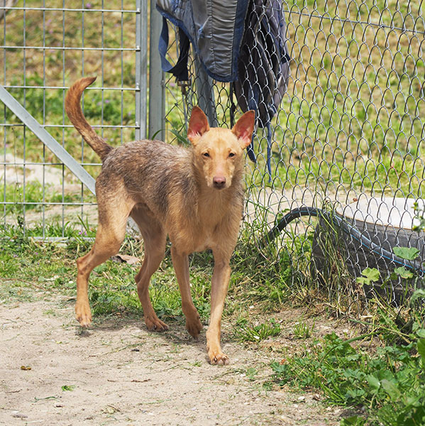
Topo
Sexo: macho
Edad: 1 año
Tamaño: pequeño
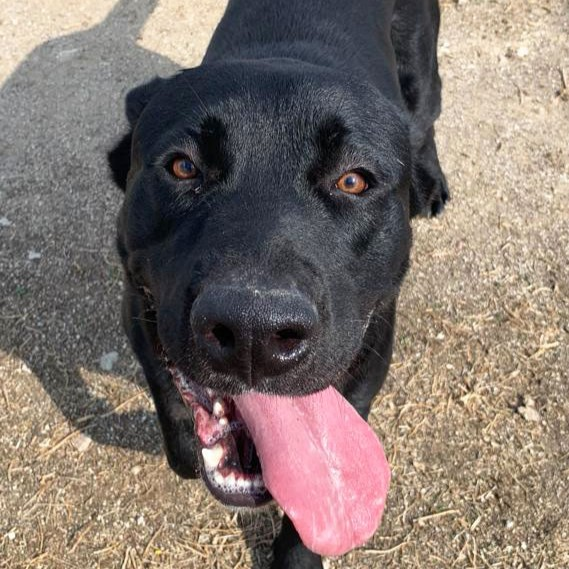
Harlem
Sexo: macho
Edad: 1 año
Tamaño: grande
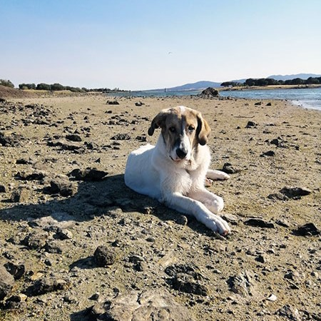
Cuarzo
Sexo: macho
Edad: 10 meses
Tamaño: grande
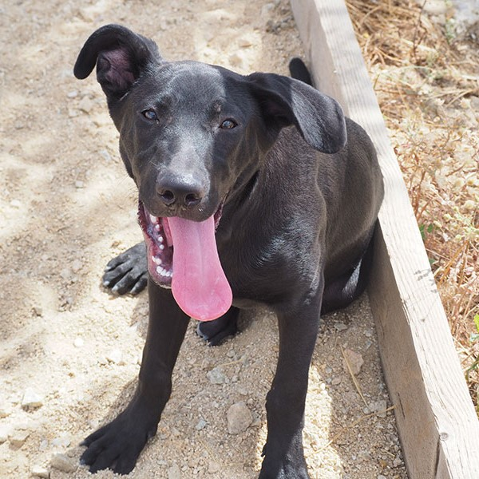
Anuar
Sexo: macho
Edad: 8 meses
Tamaño: mediano
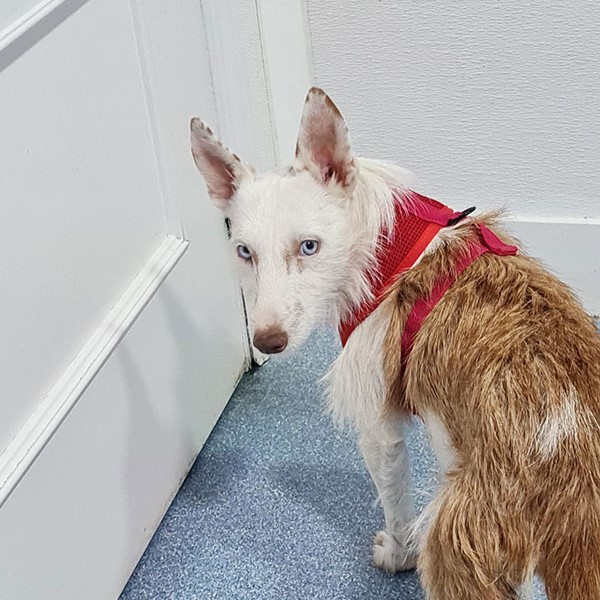
Frozen
Sexo: hembra
Edad: 2 años
Tamaño: pequeño
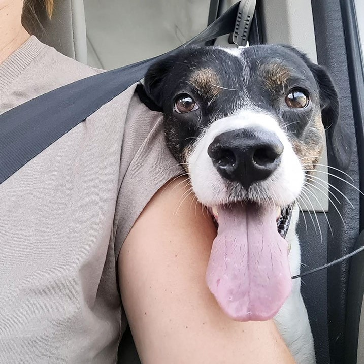
Rais
Sexo: macho
Edad: 2 años
Tamaño: mediano
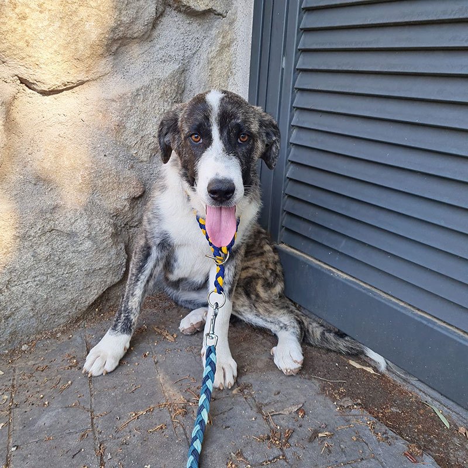
Califa
Sexo: hembra
Edad: 10 meses
Tamaño: grande
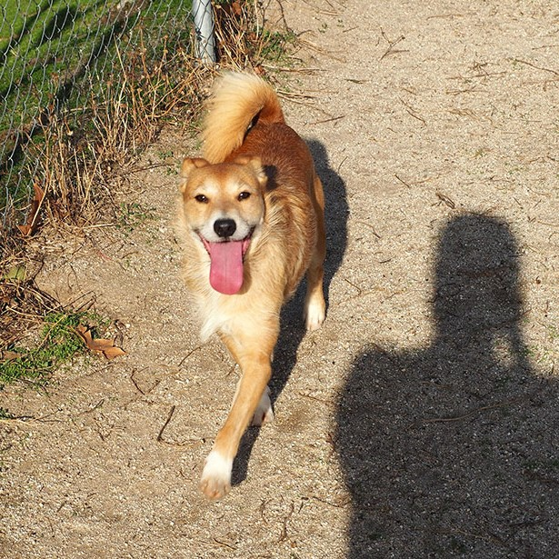
Nalon
Sexo: macho
Edad: 3 años
Tamaño: mediano
Toda ayuda es buena
Si la adopción todavía no es una opción para ti,
puedes visitar nuestras instalaciones y hacerte voluntario